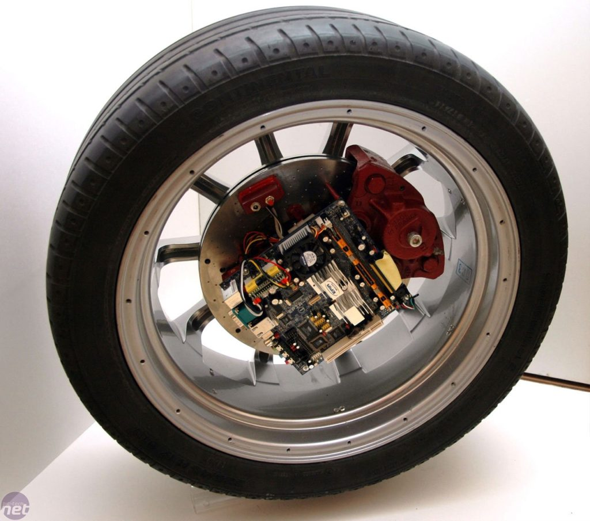

Les PC les plus insolites - Les recyclés - Premier PC
Le premier pc :

Pour ce premier pc, on a le droit a un génie qui a eu l'idée de dissimuler un pc dans une roue de scooter.
C'est à se demander si cet ordinateur va bien tourner...
·Page d'accueil·